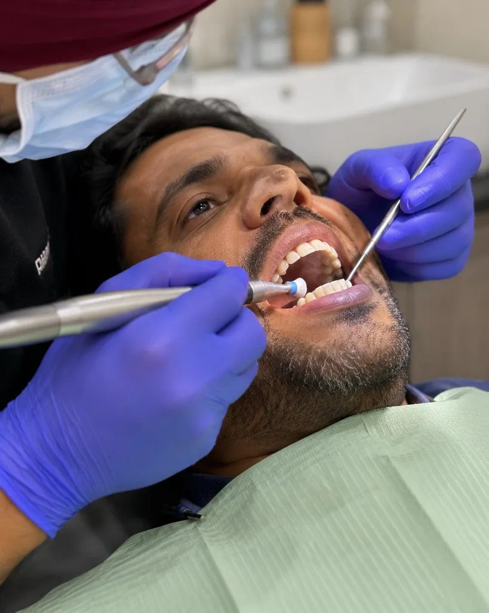
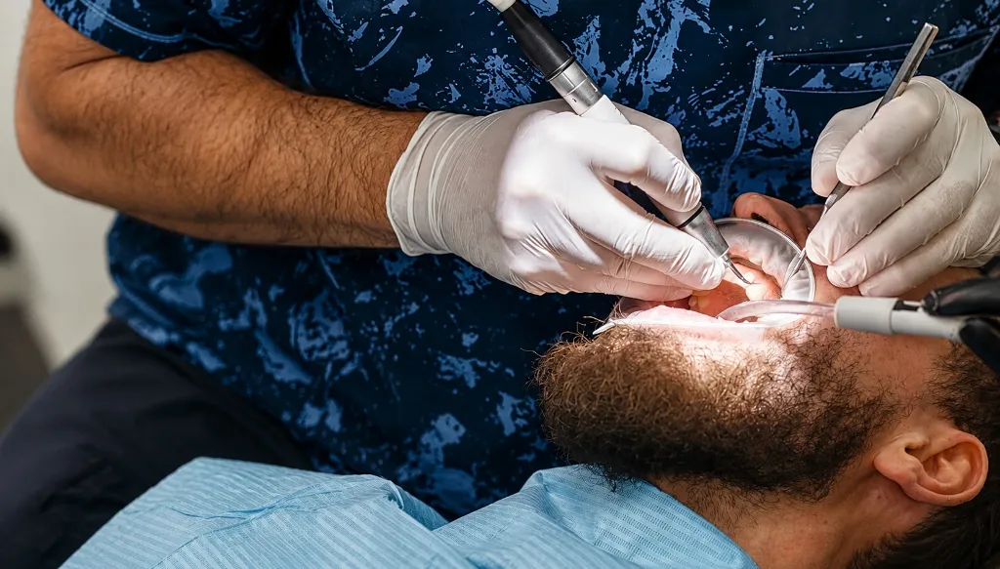

Gum Disease & Periodontal Treatment in South Bopal, Ahmedabad

Healthy gums do not bleed. If yours bleed when you brush or floss, that is inflammation — and inflammation always has a cause. Gum disease is the leading cause of adult tooth loss in India, and it is almost entirely preventable when caught early.
At Dr Batra's Dental Hub in South Bopal, gum assessment is part of every examination. Where treatment is needed, we combine ultrasonic scaling with sub-gingival irrigation and, in appropriate cases, laser pocket disinfection — under the care of Dr Gursimran Singh Batra, MDS.
Signs You Should Have Your Gums Checked
- Gums that bleed when brushing, flossing or eating firm food
- Red, swollen or tender gum tissue
- Persistent bad breath or a bad taste that brushing does not fix
- Gums that appear to be receding, or teeth that look longer than they used to
- Sensitivity along the gumline
- Gaps opening between teeth, or a bite that feels like it has shifted
- Any tooth that feels loose
The difficulty is that gum disease is usually painless until it is advanced. Most people notice bleeding, assume they brushed too hard, and brush that area more gently — which leaves more plaque and makes the inflammation worse. That is precisely why it so often goes untreated for years.
Gingivitis or Periodontitis? The Distinction That Decides Everything
Gingivitis affects the gum tissue only. Remove the plaque and hardened calculus and the tissue returns to full health with no lasting damage. It is completely reversible.
Periodontitis is what gingivitis becomes if it is left. The inflammation extends to the ligament and the bone that holds the tooth in place, and that bone does not grow back. Periodontitis can be stabilised and managed, but it cannot be reversed.
Establishing which stage you are at is the entire purpose of the first appointment — and it determines whether we are talking about a single cleaning visit or ongoing periodontal management.

How We Assess Your Gums
- Periodontal pocket screening. We measure the depth of the space between gum and tooth at several points around each tooth. Healthy is 1–3 mm; deeper pockets indicate attachment loss.
- Digital radiographs. Digital X-rays show the level of the supporting bone, which is what separates gingivitis from periodontitis.
- Intraoral camera review. You see your own gum condition on the chairside screen rather than being told about it.
- Risk assessment. Smoking, diabetes, pregnancy, certain medications and crowded teeth all change both the risk and the treatment plan.
Treatment We Provide
- Ultrasonic scaling. High-frequency removal of hardened calculus above and below the gumline. Calculus is porous and mineralised — no amount of brushing removes it. For gingivitis this is usually the whole treatment.
- Sub-gingival irrigation. Flushing and disinfecting below the gumline, where the bacteria driving the inflammation actually live.
- Airflow prophylaxis. Removes soft deposits and surface staining, leaving a smooth surface that plaque finds harder to recolonise.
- Laser pocket disinfection. Our dental diode laser sterilises infected periodontal pockets with virtually no bleeding, minimal discomfort and fast tissue recovery. See laser dentistry for how the technology works.
- Gum contouring and reshaping. Where uneven or excessive gum tissue is a concern, the laser can reshape the gum line precisely.
- Maintenance reviews. Pocket depths are re-measured so we can confirm the condition is stable rather than assuming it.
Every case is assessed individually. Where a gum condition is more advanced than scaling and laser therapy can address on their own, we will tell you that directly at the consultation and discuss what the appropriate next step is, rather than starting treatment that will not resolve it.

Why Gum Health Matters Beyond Your Gums
Gum disease is the leading cause of tooth loss in adults — ahead of decay. It also matters for anything you may want to do later: active periodontal disease must be stabilised before dental implants can be placed, because the same disease process can affect the bone around an implant.
Chronic gum inflammation has also been consistently associated with cardiovascular disease, poorly controlled diabetes and adverse pregnancy outcomes. Researchers are still separating how much of that link is causal from how much reflects shared risk factors, so it would be overstating things to say gum disease causes heart disease. What is clear is that it represents an ongoing inflammatory burden — and it is one of the more straightforward ones to remove.
What It Costs
Cost depends on what the screening finds: a single scaling appointment for early gingivitis is a very different proposition from staged treatment of deeper pockets across several visits. We assess first, then give you a written plan with costs before any treatment begins. If you would like an estimate, get in touch and we will talk it through.
Aftercare That Actually Works
- Angle the brush at 45° to the gumline, not straight at the tooth — the bristles need to reach just under the gum edge.
- Clean between the teeth daily. A brush cannot reach roughly 40% of the tooth surface.
- Soft bristles, light pressure. If your bristles splay within a month, you are pressing too hard.
- Keep to your maintenance interval. Gum disease is a chronic condition — it is managed, not cured.
- If you smoke, know that nicotine constricts blood vessels and can mask bleeding while the disease progresses underneath.
Painless does not mean harmless. The gum disease that costs people their teeth in their fifties was completely reversible in their twenties.
— Dr. Gursimran Singh Batra, MDS
Gum Treatment for South Bopal, Bopal, Shela & Ahmedabad
Our clinic is on the ground floor at B-17/C, Sun South Street, behind Safal Parisar-1 in South Bopal — a short drive from Bopal, Shela, Ghuma, Shilaj and Ambli, and easily reached from across Ahmedabad via the SP Ring Road. We are open Monday to Saturday 10:30 AM–8:00 PM and Sunday 10:00 AM–12:00 PM.
If your gums have been bleeding and you have been putting it off, a routine check-up with periodontal screening is the whole intervention. Read our detailed guide on what bleeding gums are telling you, or book an appointment.